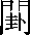

淳風第十七
太上下知有之，太上，謂太古無名之君也。下知有之者，下知上有君，而不臣事，質朴也。[1]其次親之譽之，其德可見，恩惠可稱，故親愛而譽之。其次畏之，設刑法以治之。其次侮之。禁多令煩，不可歸誠，故欺侮之。信不足焉，君信不足於下，[2]下則應之以不信而欺其君也。猶兮其貴言。説太上之君舉事，猶貴重於言，[3]恐離道失自然。功成事遂，[4]謂天下太平也。百姓皆謂我自然。百姓不知君上之德淳厚，反以爲只自當然也。[5]
俗薄第十八
大道廢，有仁義；[6]大道之時，家有孝子，户有忠信，仁義不見也。大道廢不用，[7]惡逆生，乃有仁義可傳道。智惠出，有大僞；[8]智惠之君，賤德而貴言，賤質而貴文，下則應之以爲大僞姦詐。六親不和，有孝慈；[9]六絶絶，[10]親戚不和，乃有孝慈相牧養也。國家昏亂，有忠臣。[11]政令不行，上下相怨，邪僻争權，乃有忠臣匡正其君也。[12]此言天下太平，不知仁；人盡無欲，不知廉；各潔己，不知貞。大道之君，[13]仁義没，孝慈滅，猶日中盛時，[14]衆星失光。
還淳第十九
絶聖絶聖制作，反初守无。五帝垂象，[15]倉颉作書，不如三皇結繩無文。棄智，棄智惠，反無爲。民利百倍；農事修，公無私。倍，蒲罪反。絶仁棄義，絶仁之見恩惠，棄義之尚華信。[16]民復孝慈；德化淳也。絶巧棄利，絶巧者，詐僞亂真也。棄利者，塞貪路，閉權門也。盗賊無有。上化公政，下無邪私。[17]此三者，謂上三事所棄絶也。以爲文不足。以爲文不足者，文不足以教民。故令有所屬：當如下句。令，力征反。屬，之欲反。見素抱朴，見素者，當抱素守真，不尚文飾也。抱朴者，當見其篤朴以示下，故可法則。見，賢遍反。朴，普角反。少私寡欲。少私者，正無私也。寡欲者，當知足也。
異俗第二十
絶學絶學不真，不合道文。無憂。除浮華則無憂患也。唯之與阿，相去幾何？同爲應對，而相去幾何？疾時賤質而貴文。唯，遺癸反。善之與惡，相去何若？善者和譽，[18]惡者谏争，能相去何如？疾時惡忠直，用邪佞也。人之所畏，不可不畏。人謂道人也。人所畏者，[19]畏不絶學之君也。不可不畏，近令色，殺仁賢。[20]荒兮其未央哉！或言世俗人荒亂欲進學爲文，[21]未央止也。衆人熙熙，熙熙，淫放多情欲也。[22]如享太牢，如飢思太牢之具，意無足時也。如春登臺。春，陰陽交通，萬物感動，登台觀之，意志淫淫然。[23]我獨怕兮，其未兆。我獨怕然安静，未有情欲之形兆也。怕，普白反。如嬰兒之未孩。如小兒未能答偶人時也。乘乘兮，[24]若無所歸。我乘乘，如窮鄙無所歸就。衆人皆有餘，衆人餘財以爲奢，餘智以爲詐。而我獨若遺。我獨如遺棄似於不足也。我愚人之心也哉！不與俗人相隨，守一不移，如愚人之心也。沌沌兮，無所分别。俗人昭昭，明且達也。我獨若昏；如闇昧也。俗人察察，察察，急且疾也。我獨悶悶。悶悶，無所割截。忽兮若海，我獨忽忽，如江海之流，莫知其所窮極也。漂兮若無所止。我獨漂漂，若飛若揚，無所止也，志意在神域也。衆人皆有以，以有爲也。而我獨頑我獨無爲。似鄙。鄙似若不逮也。[25]我獨異於人，我獨與人異也。而貴食母。食，用也。母，道也。我獨貴用道也。
虚心第二十一
孔德之容，孔，大也。有大德之人，[26]無所不容，能受垢濁，處謙卑也。唯道是從。唯，獨也。大德之人，不隨世俗所行，獨從於道也。道之爲物，唯恍唯忽。道之於萬物，獨恍忽往來於其無所定也。[27]恍，泥往反。又，呼廣反。忽兮恍兮，其中有像；道唯忽恍無形，之中獨爲萬物法像。[28]恍兮忽兮，其中有物。道唯恍忽，其中有一，經營主化，因氣立質。窈兮冥兮，其中有精；道唯窈冥無形，其中有精實，神明相薄，陰陽交會也。窈，鳥了反。其精甚真，言存精氣，其妙甚真，[29]非有飾也。其中有信。道匿功藏名，[30]其信在中也。自古及今，其名不去，自，從也。自古至今，道常在不去。以閲衆甫。閲，禀也。甫，始也。言道禀與萬物，始生從道受氣。吾何以知衆甫之然哉？我何以知從道受氣。[31]以此。此，今也。以今萬物皆得道精氣而生，動作起居，非道不然。[32]
益謙第二十二
曲則全，曲己從衆，不自專，則全其身也。[33]枉則直，枉屈己而伸人，久久自得直也。窪則盈，地窪下，水流之；人則下，[34]德歸之也。窪，鳥瓜也。敝則新，自受弊薄，後己先人，天下敬之，久久自新也。少則得，自受取少，[35]則得多也。天道祐謙，神明托虚。多則惑。財多者，惑於所守；[36]學多者，惑於所聞。是以聖人抱一，爲天下式。抱，守；法，式也。[37]聖人守一，乃知萬事，故能爲天下法式也。不自見，故明，聖人不以其目視千里之外也，乃因天下之目以視，故能明達也。不自是，故彰，聖人不自以爲是而非人，故能彰顯於世。不自伐，故有功，伐，取也。聖人德化流行，不自取其美，故有功於天下。不自矜，故長。矜，大也。聖人不自貴大，故能久不危。夫惟不争，故天下莫能與之争。此言天下賢與不肖，無能與不争者争也。古之所謂“曲則全”者，豈虚言哉！傳古言，曲從則全身，正言非虚妄也。[38]誠全而歸之。誠，實也。能行曲從者，實其飢體，[39]歸之於父母，無有傷害也。
虚無第二十三
希言自然。希言者，是愛言也。[40]愛言者，自然之道。飄風不終朝，驟雨不終日。飄風，疾風也；驟雨，暴雨也。言疾不能長，暴不能久也。驟，狀救反。孰爲此者？天地。孰，誰也。誰爲此飄風暴雨者乎？天地所爲。天地尚不能久，不終於朝暮也。[41]而况於人乎？天地至神，合爲飄風暴雨，尚不能使終朝至暮，何况人欲爲暴卒乎！故從事於道者，從，爲也。人爲事，當如道安静，不當如飄風驟雨。道者同於道，道者，謂好道人也。同於道者，所謂與道同。[42]德者同於德，德[43]，謂好德人也。同於德者，所謂與德同也[44]。失者同於失。失，[45]謂任己失人也。同於失者，所謂與失同也。[46]同於道者，道亦樂得之；與道同者，道亦樂得之也。同於德者，德亦樂得之；與德同者，德亦樂得之也。同於失者，失亦樂失之。[47]與失同者，失亦樂失之也。信不足焉，君信不足於下，下則應君以不足也。[48]有不信焉。此言物類相歸，同聲相應，雲從龍，風從虎，水流濕，火就燥，自然之類也。[49]
苦恩第二十四
跂者不立，跂，進也。謂貪權慕名，進取功榮也，則不可久立身行道也。跨者不行，自以爲貴而跨於人，衆共蔽之，使不得行。跨，苦化反。自見者不明，人自見其形容以爲好，自見所行以爲應道，殊不自知其形醜、操行之鄙。自是者不彰，自以爲是而非人，衆共蔽之，使不得彰明。自伐者無功，所謂辄自伐取其功美，[50]即失有功於人也。自矜者不長。好自矜大者，不可以長久。其於道也，曰餘食贅行。[51]贅，貪也。使此自矜伐之人，在治國之道，曰然斂，[52]餘禄食，爲貪行。贅，專税反。行，下孟反。物或惡之。此人在位，動欲傷害，故物無有不畏惡地。[53]惡，烏路反。故有道者不處也。言有道之人，不居其國也。
象元第二十五
有物混成，先天地生。謂道無形混沌而成萬物，乃在天地之前。混，胡本反。先，悉薦反。寂兮寥兮，獨立而不改，寂者，無音聲；寥者，空無形；獨立者，無匹雙；不改者，化有常。周行而不殆，道通行天地，無所不入，在陽不焦，托陰不腐，無不貫穿，不危殆。殆，田賴反。可以爲天下母。道育養萬物，精氣如母之養子。吾不知其名，字之曰道，[54]我不見道形容，[55]不知當何以名之，見萬物皆從道所生，故字之曰道也。強爲之名曰大。不知其名，強曰大者，[56]高而無上，羅而無外，無不包容，故曰大也。强，其文反。大曰逝，其爲大，非若天常在上，非若地常在下，乃復逝去，無常處所也。逝曰遠，言遠者，窮乎無窮，布氣天地，無所不通也。遠曰反。言其遠，不越絶，乃復在人身也。[57]故道大，天大，地大，王亦大。道大者，包羅諸天地無所不容也。[58]天大者，無所不蓋也。地大者，無所不載也。王大者，無所不制也。域中有四大，四大，道、天、地、王也。凡有稱有名，則非其極也。言道則有所由，有所由然後謂之爲道。然則是道稱中之大也，不若無稱之大也，無稱不可得而名曰域也。天、地、王皆在乎無稱之内也。故曰域中有四大者也。[59]而王居其一焉。八極之内有四大，王居其一也。人法地，人當法地，安静和柔也。種之得五穀，掘之得甘泉，勞而不怨也，有功而不制也。[60]地法天，天湛泊不動，施而不求報，生長萬物，無所收取。天法道，道清静不言，[61]陰行精氣，萬物自成也。道法自然。道性自然，無所法也。
重德第二十六
重爲輕根，人君不重，則不尊；治身不重，則失神。草木之華輕，故零落；根重，故長存也。輕，起攻反。静爲躁君。人君不静，則失威；治身不静，則身危。龍静，故能變化；虎躁，故夭虧也。是以聖人終日行，[62]不離辎重。辎，静也。聖人終日行道，不離其静與重也。離，音利。輜，側基反。重，直用反。雖有榮觀，燕處超然。榮觀，謂宫

。燕處，後妃所居也。超然，遠避而不處也。奈何萬乘之主，奈何者，疾時主傷痛之辭[63]。萬乘之主，謂王。乘，繩證反。[64]而以身輕天下？王者至尊，而以其身行輕躁乎？疾時王奢恣輕淫也。輕則失臣，王者輕滔，[65]則失其臣；治身輕淫，則失其精。躁則失君。王者行躁疾，則失其君位；治身躁疾，則失其精神也。巧用第二十七
善行無轍迹，[66]善行道者，求之於身，不下堂，不出門，故無轍迹。行，下孟反。善言無瑕讁；[67]善言，[68]謂擇言而出，則無瑕疵讁過於天下。讁，直華反。善計不用籌策，善以道計事者，則守一不移，所計不多，則不用籌策而可知也。籌，直由反。善閉無關鍵而不可開，[69]善以道閉情欲、守精神者，不如門户有關鍵可得開。揵，其偃反。善結無繩約而不可解。[70]善以道結事者，乃可結其心，不如繩索可得解也。是以聖人常善救人，聖人所以常教人忠孝者，欲以救人在命。[71]故無棄人；使貴賤各得其所也。常善救物，聖人所以教民順四時，以救萬物之殘傷。故無棄物。聖人不賤石而貴玉，視之如一。是謂襲明。聖人善救人物，謂襲明，大道也。故善人者，不善人之師；人之行善者，聖人即以爲人師。不善人者，善人之資。資，用也。人行不善，聖人猶教導使爲善，[72]得以給用也。不貴其師，獨無輔也。不愛其資，無所使也。雖智大迷，雖自以爲智，言此人乃大迷惑。是謂要妙。能通此意，是謂知微妙要道也。
反朴第二十八
知其雄，守其雌，爲天下谿。雄以喻尊，雌以喻卑。人雖知自尊顯，[73]當復守之以卑微，去之強梁，[74]就雌之柔和。如是則天下歸之，如水流入深谿也。谿，苦奚反。爲天下谿，常德不離，人能謙下如深谿，則德常在不復離於己。復歸於孾兒。[75]常復歸志於孾兒，[76]蠢然而無所知也。知其白，守其黑，爲天下式。白以喻昭昭，黑以喻默默。人雖自知昭昭明白，[77]當復守之以默默，如闇昧無所見，如是則可爲天下法式，則得常在。[78]爲天下式，常德不忒，[79]人能爲天下法，[80]則德常在於己，不復差忒。復歸於無極。德不差忒，[81]則長生久壽，歸身於無窮極也。知其榮，守其辱，爲天下谷。榮以喻尊貴，辱以喻污濁。知己之有榮貴，[82]當守之以污濁，如是則天下歸之，如水流入深谷也。爲天下谷，常德乃足，足，止也。人能爲天下谷，德乃止於己。[83]復歸於朴。復當歸身於質朴，不復爲文飾。朴散則爲器，萬物之朴散則爲器用也。若道散則爲神明，流爲日月，分爲五行也。聖人用之，則爲官長，聖人升用，則爲百官之元長也。故大制不割。聖人用之，則以大道制御天下，無所傷割；治身則以天道制情欲，[84]不害精神也。
無爲第二十九
將欲取天下欲爲天下主也。而爲之，欲以有爲治民。吾見其不得已。我見其不得天道人心已明矣。天道惡煩濁，人心惡多欲。天下神器，不可爲也。器，物也。人乃天下之神物也。神物好安静，不可以有爲治。爲者敗之，[85]以有爲治之，則敗其質性。執者失之。強執教之，人則失其情實，生於詐僞也。[86]故物或行或隨，上所行，下必隨之也。或呴或吹，呴，温也；吹，寒也。有所温，必有所寒也。呴，音虚。或強或羸，有所強大，必有所羸弱也。或載或隳。載，安也。隳，危也。有所安，必有所危。隳，許規反。明人君不可以有爲治國與治身也。是以聖人去甚，去奢，去泰。甚，謂貪淫聲色；奢，謂服飾飲食；泰，謂宫室臺榭。去此三者，處中和，行無爲，則天下自化。去，羌吕反，下同。
儉武第三十
以道佐人主者，謂人主能以道自輔佐也。不以兵強天下。[87]以道自佐之主，不以兵革，順天任德，敵人自服。其事好還，其舉事好還，自責不怨於人也。師之所處，荆棘生焉；農事廢，田不修。大軍之後，必有凶年。天應之以惡氣，即害五穀。五穀盡，傷人也。善者果而已，善兵者當果敢。[88]而已，不休。不敢以取強。不以果敢取強大之名也。果而勿矜，當果敢謙卑，勿自矜大也。果而勿伐，當果敢推讓，乃自伐取其美也。[89]果而勿驕，驕，欺也。果敢勿以驕欺人。果而不得已，當果敢至誠，不當迫不得已也。果而勿強。果敢勿以爲強兵堅甲以侵凌人也。[90]物壯則老，草木壯極則枯落，人壯極則衰老也。言強者不可以壯。[91]是謂不道，枯老者坐不行道也。不道早已。不行道者早死。
偃武第三十一
夫佳兵，[92]不祥之器，祥，善也。兵者，驚精神，濁和氣，不善人之器也，不當修飾之。物或惡之，[93]兵動則有所害，故萬物無有不惡之。故有道者不處。有道之人，不處其國。君子居則貴左，貴柔弱也。用兵則貴右。貴剛強也。此言兵道與君子道反，所貴者異也。兵者，[94]不祥之器，兵革者，不善之器也。[95]非君子之器，非君子所貴重器也。不得已而用之，謂遭衰逆亂，[96]禍欲加萬民，乃用之以自守。恬惔爲上。[97]不貪土地，利人財寶。勝而不美，雖得勝，而不以爲利己也。[98]而美之者，是樂殺人。美得勝者，是爲喜樂殺人者也。夫樂殺人者，則不可以得志於天下矣。爲人君而樂殺人，[99]此不可使得志於天下，爲人主必專制人命，妄行刑誅。吉事尚左，左，生位也。凶事尚右。陰道殺人。偏將軍居左，偏將軍卑而居陽者，[100]以其不專殺也。上將軍居右，上將軍尊而居右者，言其主殺也。[101]言以喪禮處之。上將軍於右，喪禮尚右，死人貴陰也。殺人之衆，以悲哀泣之，[102]傷己德薄，不能以道化人，而害无辜之民。戰勝以喪禮處之。古者戰勝將軍居喪主禮之位，素服而哭之，明君子貴德而賤兵，不得已誅不祥，心不樂之，比於喪也。知後世用兵不已，故悲痛之。[103]
聖德第三十二
道常無名。道，能陰能陽，能施能張，能存能亡，故無常名也。朴雖小，天下不敢臣。道朴雖小，微妙無形，天下不敢有臣使道者也。侯王若能守之，萬物將自賓。侯王若能守道無爲，萬物將自賓服，從於德也。[104]天地相合，以降甘露，侯王動作，能與天相應合，天即下甘露善瑞也。民莫之令而自均。天降善瑞，則萬物莫有教令之者，皆自均調若一也。始制有名，始，道也。有名，萬物也。道無名，能制於有名，無形能制於有形也。名亦既有，既，盡也。有名之物，盡有情欲，叛道離德，故身毀辱也。天亦將知之，人能去道行德，[105]天亦將自知之。知之，所以不殆。天知之，則神靈祐助，不復危殆。譬道之在天下，猶川谷之與江海。言言道之在天下，[106]與人相應和，如川谷與江海相流通也。
辯德第三十三
知人者智，能知人好惡，是爲智。自知者明。人能自知賢不肖，是爲反聽無聲，内視無形，故爲明。勝人者有力，能勝人者，不過以威力也。[107]自勝者強。人能自勝己情欲，則天下無有能與己争者，故爲強。知足者富，人能知足之爲足，[108]則長保福禄，故爲富也。強行者有志。人能強力行善，則爲有意於道，道亦有意於人。不失其所者久，人能自節養，不失其所受天之精氣，則可以久。死而不亡者壽。[109]目不妄視，耳不妄聽，口不妄言，則無怨惡於天下，故長壽。
任成第三十四
大道氾兮，言道氾氾，[110]若浮若沉，若有若無，視之不見，説之難殊。其可左右。道可左右，[111]无所不宜。萬物恃之而生，恃，待也。萬物皆恃道而生。[112]而不辭，道不辭謝而逆止也。功成不名有。有道，不名其有功也。[113]愛養萬物而不爲主，道雖愛養萬物，不如人主有所放取。[114]常無欲可名於小；道匿德藏名，恒然無爲，似若微小也。萬物歸焉而不爲主，萬物皆歸道受氣，道非如人主有所禁止也。可名爲大。萬物横來横去，使名自在，故不若於大也。[115]是以聖人終不爲大，聖人法道，匿德藏名，不爲滿大。故能成其大。聖人以身師導，不言而化，萬事修治，故能成其大。
仁德第三十五
執大象，天下往。執，守也。象，道也。聖人守大道，則天下萬民移心歸往之也。治身則天降神明往來於己也。往而不害，安平太。萬物歸往而不傷害，則國安家寧而致太平矣。[116]治身不害神明，則身安而大壽也。[117]樂與餌，過客止。餌，美也。過客，一也。人能樂美於道，則一留止也，一者去盈而處虚，忽忽如過客。道之出口，淡乎其無味，道出入於口，淡淡非如五味有酸、鹹、苦、甘、辛也。視之不足見，足，德也。[118]道無形，非若五色有青、黄、赤、白、黑，可得見也。聽之不足聞，道非若五音有宫、商、角、徵、羽，可得聽聞也。用之不可既。用道治國，則國安民昌；治身，則壽命延長，無有既盡時也。
用微明第三十六
將欲噏之，必固張之；先開張之者，欲極其奢淫。將使弱之，必固強之；先強大之者，欲使遇禍患。將欲廢之，必固興之；先興之者，欲使其驕危也。將欲奪之，必固與之；先與之者，欲極其貪心也。是謂微明。此四事，其道微，其效明也。柔弱勝剛強。柔弱者久長，剛強者先亡也。魚不可脱於淵，魚脱於淵，爲去剛得柔，不可復制也。國之利器不可以示人。利器，權道也。治國權者不可以示執事之臣也，治身道者不可以示非其人也。
爲政第三十七
道常無爲道以無爲爲常也。而無不爲。侯王若能守，萬物將自化。言侯王若能守道，萬物將自化效於己也。化而欲作，吾將鎮之以無名之朴。吾，身也。無名之朴，道也。萬物以化效於己也。[119]復欲作巧僞者，[120]侯王當身鎮撫以道德。無名之朴，亦將不欲。不欲以静，言侯王鎮撫以道德，民亦將不欲改，當以清静導化之也。天下將自定。[121]能如是者，天下將自正定也。[122]
【注释】
[1]“朴”下，慶長本、道藏本有“淳”字。
[2]“下”下，慶長本、道藏本有《老子》原文“有不信焉”四字。
[3]“猶”下，慶長本、道藏本復有一“猶”字。
[4]“功成事遂”，慶長本作“成功遂事”。
[5]“百姓”至“然也”十八字，慶長本無“淳”字、“只”字。“只自當”，道藏本作“己自知”。
[6]“有”上，慶長本有“焉”字。
[7]“不用”，慶長本無此二字。
[8]“有”上，慶長本有“焉”字。
[9]“有“上，慶長本有“焉”字。
[10]“六絶絶”，慶長本作“六紀廢絶”，道藏本作“六親絶”。
[11]“有”上，慶長本有“焉”字。
[12]“正”慶長本、道藏本作“救”。
[13]“君”，慶長本、道藏本作“世”。
[14]“時”，慶長本、道藏本作“明”。
[15]“垂”，慶長本、道藏本作“畫”。
[16]“信”，慶長本作“言”，道藏本無此字。
[17]“政”，慶長本、道藏本并作“正”。“下”，慶長本無。“邪私”道藏本作“私邪”。
[18]“和”，慶長本、道藏本作“稱”。
[19]“所”上，慶長本有“人之”二字，道藏本有“人”字。
[20]“殺”，慶長本作“煞”。“人賢”，道藏本作“賢人”。
[21]“或”，慶長本、道藏本無此字。“爲”，慶長本無此字，道藏本作“邪”。
[22]“淫放”，慶長本無此二字。
[23]“意志”，慶長本作“志意”。“然”，慶長本作“也”。
[24]“乘乘”，連同此句下注文之“乘乘”，慶長本均作“儡儡”。
[25]“鄙似”，慶長本作“以鄙”。
[26]“有”，慶長本無此字。
[27]“无所定也”，慶長本作“所也”。
[28]“之中獨爲萬物法像”，慶長本“之”上有“無形”二字，“法”上有“設”字。
[29]“存”，慶長本、道藏本作“道”。“其”，慶長本、道藏本作“神”。
[30]“藏”，慶長本無此字。
[31]“我何以知從道受氣”，道藏本無此八字。
[32]“此今”至“不然”，道藏本無此二十二字。“動”上，慶長本有“人”字。
[33]“其身”，慶長本無此二字。
[34]“則”，慶長本、道藏本作“謙”。
[35]“受取”，慶長本作“得”。道藏本無“取”字。
[36]“所守”，慶長本作“守身”。
[37]“法式也”，慶長本、道藏本并作“式法也”。
[38]“妄”，慶長本作“空”，道藏本無此字。
[39]“實其飢體”，慶長本作“實全其肌體”。道藏本“飢”作“肌”。
[40]“希言者是愛言也”，慶長本、道藏本作“希言謂愛言也”。
[41]“終於朝暮”，道藏本作“能終朝至夕”。
[42]“所謂”，慶長本、道藏本作“所爲”。
[43]“德”下，慶長本、道藏本有“者”字。
[44]“所謂”，慶長本、道藏本作“所爲”。
[45]“失”下，慶長本有“者”字。
[46]“所謂”，慶長本、道藏本作“所爲”。
[47]“失之”，連同本句下注文中“失之”，慶長本均作“得之”。道藏本《老子》原文“失之”作“得之”，無此句下注文“與夫”至“之也”十字。
[48]“足”，慶長本、道藏本作“信”。
[49]“自然之類”，慶長本無此四字。道藏本“類”作“數”。
[50]“所謂”，慶長本、道藏本作“所爲”。
[51]“曰”，慶長本作“日”。
[52]“曰然”，慶長本、道藏本作“日賦”。整理者按：“日賦”於義更勝。
[53]“地”，慶長本作“之也”。道藏本作“之”。
[54]“字”上，慶長本有“故”字。
[55]“見道形容”，慶長本作“知道之形容”。
[56]“不知其名強曰大者”，慶長本作“不知其名之強曰大大者”。
[57]“復”下，慶長本、道藏本有“反”字。
[58]“包羅”至“容也”十字，慶長本作“無不容也”。
[59]“四大道”至“者也”七十八字，慶長本、道藏本無。按：此七十八字當爲王弼注文，慶長、道藏本是。
[60]“制”，慶長本作“宣”，道藏本作“置”。
[61]“道”慶長本作“天當法道以”。
[62]“聖人”，連同本句下注文中只“聖人”，慶長本均作“君子”。道藏本注文中“聖人”作“君子”。
[63]“辭”，慶長本作“也”。
[64]“萬乘之主謂王”，道藏本無此六字。
[65]“滔”，慶長本、道藏本作“淫”。
[66]“行”下，慶長本、道藏本有“者”字。
[67]“言”下，慶長本有“者”字。
[68]“言”下，慶長本有“者”字。
[69]“閉”下，慶長本、道藏本有“者”字。
[70]“結”下，慶長本、道藏本并有“者”字。
[71]“在”，慶長本、道藏本作“性”。
[72]“人行”至“爲善”，慶長本“不善”下有“者”字，“猶”作“獨”。道藏本無“聖人”二字。
[73]“知自”，慶長本、道藏本作“自知其”。
[74]“去”下，慶長本有“雄”字，道藏本有“其雄”二字。
[75]“孾”連同下句注文中之“孾”，慶長本、道藏本均作“嬰”。
[76]“常復”，慶長本、道藏本作“復當”。
[77]“白”，慶長本、道藏本作“達”。
[78]“則得常在”，慶長本無此四字。
[79]“忒”，慶長本作“惑”。
[80]“法”下，慶長本、道藏本有“式”字。
[81]“忒”，慶長本作“惑”。
[82]“知”上，慶長本有“人能”二字。
[83]“乃”下，慶長本有“常”字。
[84]“天道”，慶長本、道藏本并作“大道”。
[85]“者”下，慶長本有“則”字。
[86]“人则”至“僞也”十一字，慶長本無“人”、“於”二字。道藏本無“其”字，“情”作“精”。
[87]“強”下，慶長本、道藏本有“於”字。
[88]“善兵”，慶長本作“行善”。道藏本作“善用兵”。
[89]“乃”，慶長本、道藏本作“勿”。
[90]“果敢”至“人也”，慶長本無“爲”字、下“以”字。
[91]“壯”，慶長本、道藏本作“久也”。
[92]“佳兵”，慶長本作“餝兵者”。
[93]“或”，慶長本作“有”。
[94]“兵”上，慶長本有“故”字。
[95]“善”下，慶長本有“人”字。道藏本無“兵戈者不善之器也”八字。
[96]“逆”，慶長本、道藏本作“逢”。
[97]“惔”，慶長本作“憺”。道藏本作“淡”。
[98]“而”，慶長本無此字。“己”，慶長本作“美”。
[99]“爲人君而樂殺人”，慶長本作“樂教人者”。
[100]“陽”，慶長本作“左”。“者”，道藏本作“位”，無下“以其不專殺也”六字。
[101]“言”，慶長本、道藏本作“以”。
[102]“以”上，道藏本有“多”字。
[103]“知後”至“痛之”，慶長本無此十一字。
[104]“德”下，慶長本、道藏本有“化”字。
[105]“去”，慶長本、道藏本作“法”。
[106]“言言”，慶長本作“譬言”，道藏本無此二字。
[107]“威”，慶長本作“盛”。
[108]“之爲足”，慶長本、道藏本無此三字。
[109]“亡”，慶長本作“妄”。
[110]“言”下，慶長本有“大”字。
[111]“左”下，慶長本、道藏本有“可”字。
[112]“恃道”，慶長本、道藏本作“待道”。
[113]“有道不名其功也”，慶長本作“道不名有其功也”。
[114]“放”，慶長本、道藏本作“收”。
[115]“使名”至“大也”，慶長本、道藏本“名”作“各”，“不若”作“可名”。
[116]“國安家寧”，慶長本、道藏本作“國家安寧”。“致”，慶長本無此字。
[117]“則身安”，慶長本作“身體安”，道藏本作“則身體安”。
[118]“德”，慶長本、道藏本作“得”。
[119]“以”，慶長本作“已”。“於”、“也”，慶長本無此二字。
[120]“復”上，慶長本有“效己”二字。
[121]“定”，慶長本、道藏本作作“正”。
[122]“定”上，慶長本有“安”字。
本章完!